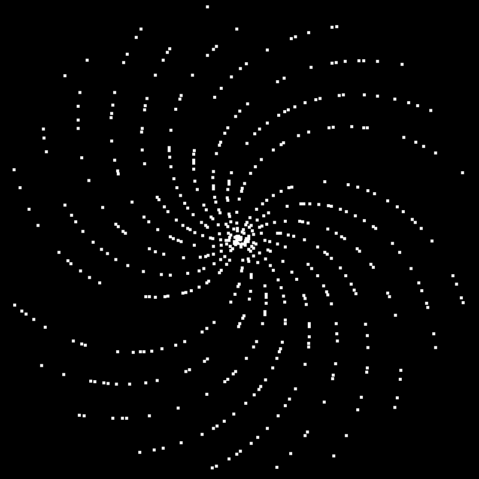
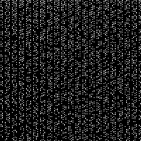

Thats Art?
Prime Visualiser berechnet alle Primzahlen bis zur festgelegten Obergrenze und rendert sie in Polardarstellung. (Daher der coole Strudel)
Das heißt jeder weiße Pixel entspricht einer Primzahl. Um die Primzahlen zu berechnen nutze ich den Sieb des Eratosthenes.
Alles in Java und dank Multithreading auch schneller als ohne.


Die fehlenden Arme in der Polardarstellung entstehen, weil diese Positionen von Vielfachen bestimmter Zahlen besetzt wären. Zum Beispiel fallen alle Vielfachen einer Zahl wie 3 oder 5 auf bestimmte Radien und erzeugen dadurch Lücken in der Spirale. Dadurch entstehen charakteristische Lücken und Muster, die die mathematische Struktur der Primzahlen sichtbar machen.
In der Grid-Darstellung hingegen zeigen sich die Muster wieder auf ihre eigene Weise: Hier sind Zahlen in Reihen und Spalten angeordnet, was die Verteilung auf eine neue Art sichtbar macht.
Die Inspiration für dieses Projekt kam aus diesem Video.
E-Mail: zintlpaul@gmail.com
GitHub: github.com/DerBaul
© 2025 Paul